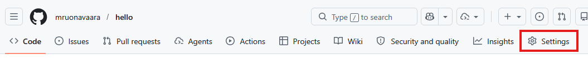
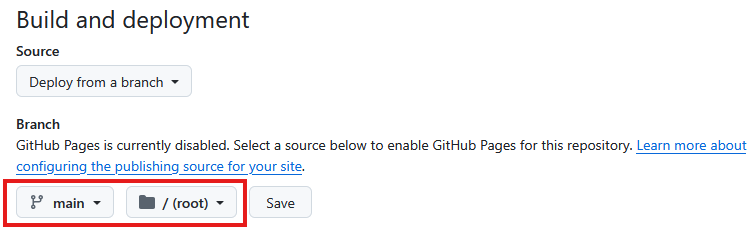

Hosting-palvelujen toimintoja
Git-hosting-palvelut tarjoavat monia toimintoja, jotka helpottavat ohjelmistokehitystä ja projektinhallintaa.
Tässä osiossa käydään läpi joitakin toimintoja, joita voidaan hyödyntää esimerkiksi opintojaksojen oppimistehtävissä.
Materiaalissa esitellään esimerkkinä GitHub-palvelun toimintoja, mutta muutkin hosting-palvelut (esim. GitLab, Bitbucket) tarjoavat vastaavat toiminnallisuudet.
Verkkosivujen julkaiseminen
GitHub Pages on GitHubin tarjoama staattisten verkkosivujen julkaisemiseen tarkoitettu palvelu, joka mahdollistaa verkkosivujen julkaisemisen suoraan GitHub-repositoriosta. Se on erityisen suosittu projektisivustojen ja henkilökohtaisten blogien ja portfolioiden luomiseen.
Mikä on staattinen verkkosivu?
Staattinen verkkosivu on sellainen, joka koostuu HTML-, CSS- ja JavaScript-tiedostoista, eikä se vaadi palvelinpuolen käsittelyä. Tämä tarkoittaa, että kaikki sivuston sisältö on valmiiksi luotuna ja tallennettuna, eikä se muutu dynaamisesti käyttäjän toiminnan perusteella.
Julkaistavan sivuston sisältö
Sivuston sisältö julkaistaan repositoriosta. Sisältö voi olla joko HTML-sivusto tai Markdown-dokumentteja.
Voit määrittää haaran, josta sisältö julkaistaan. Sisältö voi olla joko repositorion juuressa tai alihakemistossa docs. Julkaistavan sivuston aloitussivun nimeksi pitää antaa index.html, index.md tai README.md.
Julkaiseminen
GitHub Pages -sivuston julkaiseminen tehdään GitHub-palvelun verkkokäyttöliittymässä seuraavasti:
- Siirry repositoryn asetuksiin (Settings).

- Etsi GitHub Pages -osio ja valitse kohdasta Source (lähde) haluamasi haara ja hakemisto, josta sisältö julkaistaan.

- Tallenna asetukset. GitHub luo automaattisesti verkkosivuston repositorion sisällöstä.
- Sivusto on hetken kuluttua saatavilla osoitteessa
https://<käyttäjätunnus>.github.io/<repositorion-nimi>/.
Voit muokata repositorion sisältöä, ja kun teet talletuksen haaraan, muutokset päivittyvät automaattisesti verkkosivulle.
Rajoituksia
GitHub Pages on tarkoitettu staattisten verkkosivujen julkaisemiseen, joten dynaamiset toiminnot, kuten tietokantayhteydet tai server-side-skriptit, eivät ole tuettuja.
GitHub Pages on käytettävissä vain julkisille repositorioille, ellei sinulla ole maksullista GitHub-tiliä.
GitHub Pages -sivustoja ei saa käyttää kaupalliseen liiketoimintaan.
Lisäksi sivustoilla on teknisiä rajoituksia mm. sivuston koon ja liikennemäärän suhteen. Näistä saat lisätietoja GitHub Pages -palvelun dokumentaatiosta https://docs.github.com/en/pages.
Yhteistyö ja projektinhallinta
Tässä osiossa esitellään ominaisuuksia, jotka helpottavat yhteistyötä ja projektinhallintaa GitHub-palvelussa.
Käyttäjien kutsuminen repositorioon
Yhteisten repositorioiden avulla voidaan kehittää projekteja muiden kehittäjien kanssa yhteistyössä. Repositorion omistaja voi kutsua muita käyttäjiä kollaboraattoreiksi.
Kollaboraattorin kutsuminen tehdään GitHub-palvelun käyttöliittymässä seuraavasti:
- Siirry repositoryn asetuksiin (Settings).
- Etsi Collaborators-osio ja valitse Add people (lisää henkilöitä).
- Hae GitHub-käyttäjä joko GitHub-käyttäjänimen tai sähköpostiosoitteen perusteella.
- Kun painat Add, käyttäjä saa sähköpostitse kutsun liittyä repositorion kollaboraattoriksi. Käyttäjän on hyväksyttävä kutsu, ennen kuin hän saa oikeudet repositorioon.
Kollaboraattorioikeuksin voi tehdä muutoksia repositorion sisältöön (talletukset, haarat, tagit, yhdistämispyynnöt yms.), mutta ei voi hallinnoida repositoriota (esim. muuttaa asetuksia tai kutsua kollaboraattoreita).
Tehtävien hallinta
GitHub Issues on työkalu vikailmoitusten tai muiden tehtävien hallintaan repositoriossa. Yksi tehtävä (issue) kuvaa yleensä yhden asian, joka pitää selvittää tai toteuttaa.
Tehtävien hallintaa käytetään tyypillisesti näin:
- Avaa repositorio ja valitse Issues.
- Luo uusi tehtävä painikkeella New issue.
- Kirjoita selkeä otsikko ja kuvaus: mitä havaittiin, miten ongelma toistuu tai mitä halutaan toteuttaa.
- Lisää tarvittaessa vastuuhenkilö (assignee), kenelle tehtävä kohdistetaan.
Tehtäviä voidaan tarkastella, niistä voidaan käydä kesksutelua, ja niiden etenemistä voidaan seurata sekä merkitä ne valmiiksi, kun asia on hoidettu (Close issue).
Projektinhallinta
GitHub Projects on projektinhallintatyökalu, jolla tehtäviä ja yhdistämispyyntöjä voidaan koota yhteen näkymään ja seurata työn etenemistä.
Projects-työkalua käytetään usein tauluna, jossa on sarakkeita kuten To do, In progress ja Done. Työkohteita siirretään sarakkeesta toiseen työn edetessä.
Peruskäyttö etenee näin:
- Avaa repositorio ja valitse Projects.
- Luo uusi projekti (New project) ja valitse sopiva pohja (esim. Board).
- Lisää projektiin tehtäviä.
- Päivitä kohteiden tilaa siirtämällä niitä sarakkeiden välillä.
- Seuraa kokonaiskuvaa projektinäkymästä ja päivitä tehtäviä säännöllisesti.
Komentorivikäyttöliittymä
Tässä materiaalissa GitHub-palvelun toimintoja (esim. repositorioiden luonti tai yhdistämispyyntöjen käsittely) tehdään web-käyttöliittymässä.
GitHub tarjoaa myös komentorivikäyttöliittymän GitHub CLI (Command Line Interface), jolla toimintoja voidaan käyttää komentoriviltä, ilman selainta.
Käyttö
Komentorivikäyttöliittymäohjelmisto pitää asentaa tietokoneelle. Asennusohjeet löytyvät GitHub CLI:n dokumentaatiosta https://docs.github.com/en/github-cli/github-cli/about-github-cli.
Asennuksen jälkeen GitHub CLI -komentoja voidaan antaa komentorivillä. Komennot alkavat aina gh.
Jotta komentoja voi antaa, on kirjauduttava GitHub-tilille komentorivillä:
Komento avaa kirjautumissivun selaimessa. Kirjautuminen tarvitsee tehdä vain kerran.Joitakin yleisiä GitHub CLI -komentoja:
- gh repo create: Luo uusi repositorio
- gh pr create: Luo uusi yhdistämispyyntö (pull request)
- gh issue create: Luo uusi ongelma
Kaikki komennot ja niiden käyttöohjeet löytyvät GitHub CLI:n dokumentaatiosta https://cli.github.com/manual.